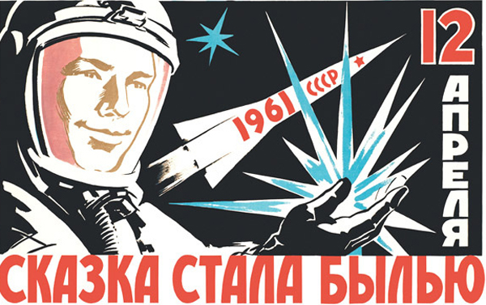

1957 : Spoutnik 1

L'URSS lance le premier satellite artificiel en orbite terrestre.
La course à l'espace fut une compétition intense entre l'URSS et les États-Unis durant la Guerre froide, de 1955 à 1975.

L'URSS lance le premier satellite artificiel en orbite terrestre.
Premier homme dans l'espace, mission Vostok 1 (URSS).

Neil Armstrong devient le premier homme à marcher sur la Lune.
Cette compétition spatiale a mené à d'importantes avancées technologiques et scientifiques qui continuent d'influencer notre vie quotidienne.
La course à l'espace est née dans un contexte de Guerre froide où chaque superpuissance cherchait à prouver sa suprématie technologique et idéologique.
Les États-Unis et l'URSS étaient engagés dans une rivalité intense, avec des enjeux bien au-delà de l'espace lui-même.
Les progrès réalisés pendant la course à l'espace ont permis des avancées dans les domaines de la communication, de la médecine, et même des transports.
Exemple : Le GPS, Internet par satellite, et les matériaux légers utilisés dans l'industrie automobile.


Testez vos connaissances sur la course à l'espace :